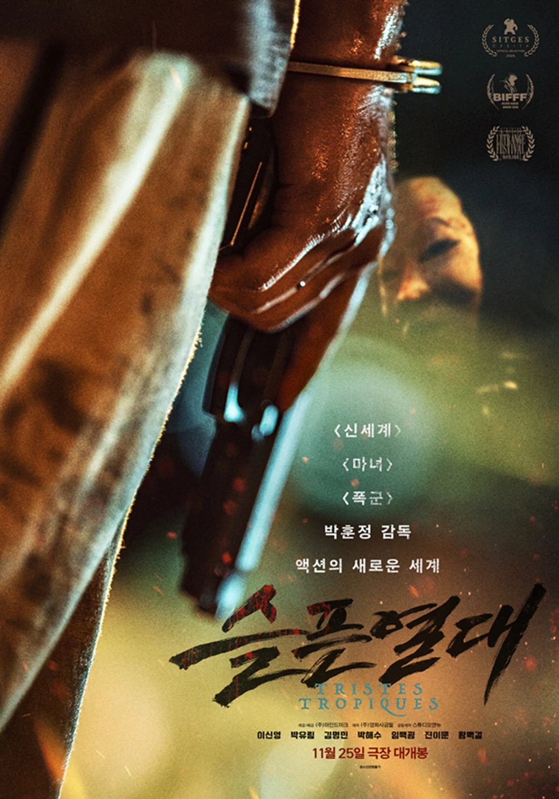
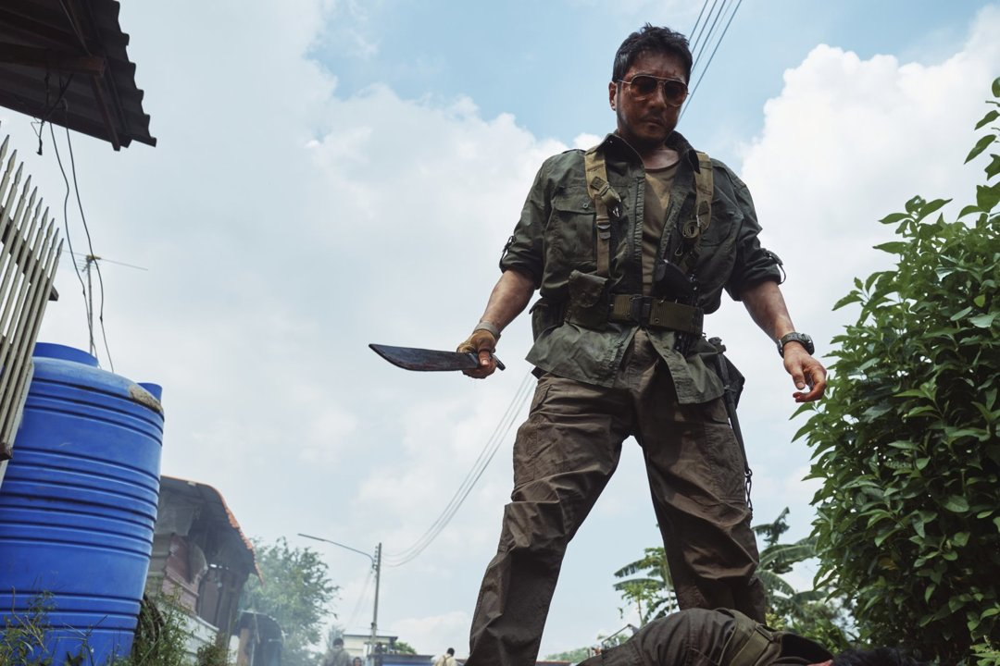
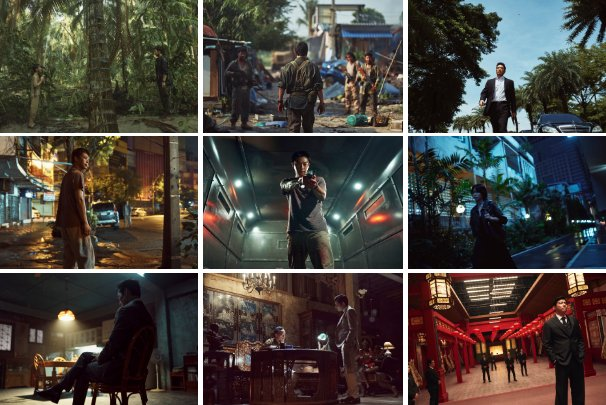
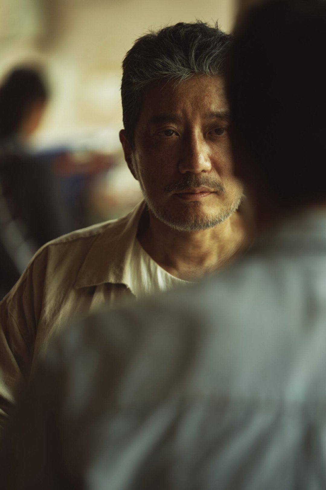
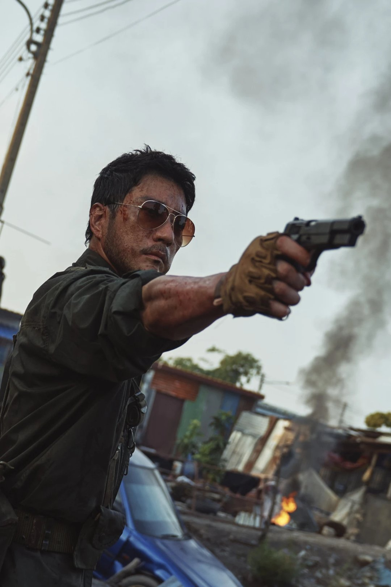
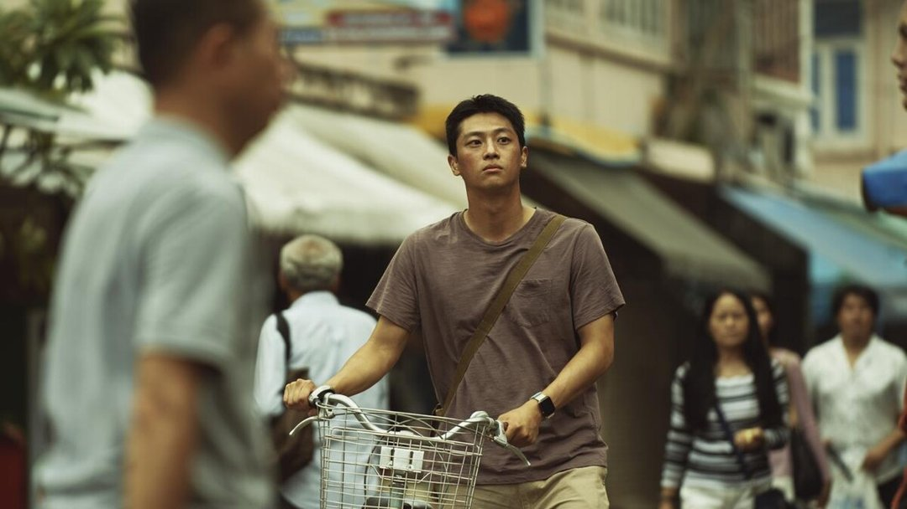
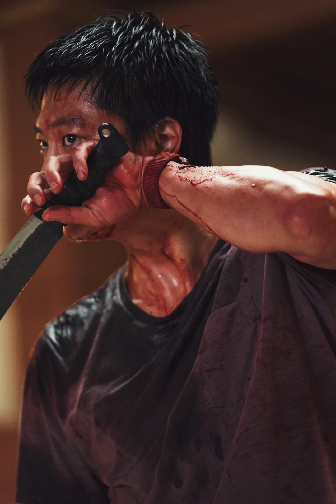
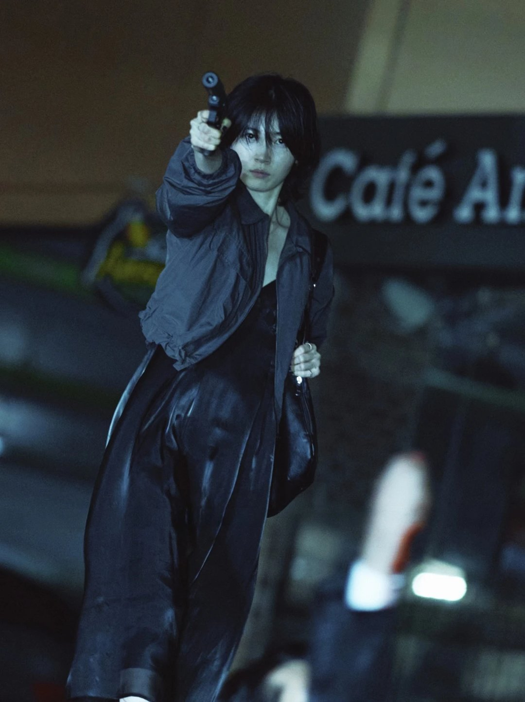
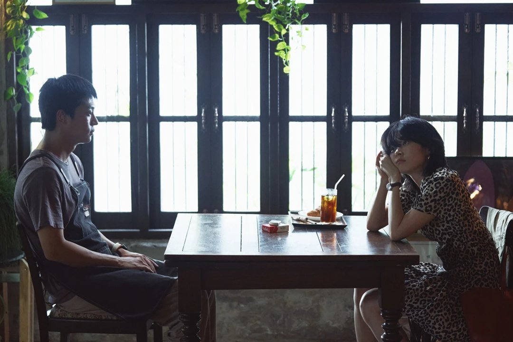
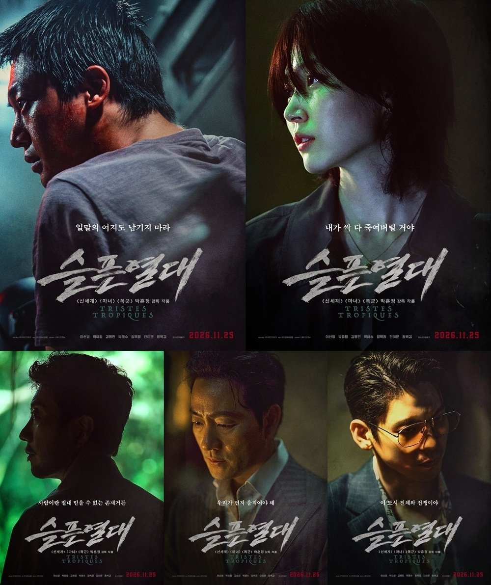

"살인 병기로 만들어놨더니 그 기술을 나라 위해서 쓰겠다고 입대했다." 19일 '슬픈 열대' 언론시사회에서 김명민이 빈자리를 두고 한 농담이에요. 주인공 루를 맡은 이신영이 해병대 복무 중이라 오지 못했거든요.
박훈정 감독이 '귀공자'(2023) 이후 3년 만에 내놓은 신작이에요. 개봉은 11월 25일이고요. 등장인물이 많고 말도 여러 나라 말이 섞여서, 누가 누구인지 먼저 알고 가면 편해요.
📷 사진 1 자리
▲ 영화 '슬픈 열대' 메인 포스터, 11월 25일 개봉 · 사진=마인드마크 제공
스승이 죽은 뒤 제자들이 서로를 의심한다
이야기는 사부의 죽음에서 시작해요. 사부가 길러낸 킬러 조직 이름이 바로 '슬픈 열대'예요. 그 안에서 형제처럼 자란 조직원들이 서로를 의심하다 복수에 나서는 이야기죠.
📷 사진 2 자리
▲ '슬픈 열대' 정글 장면 · 사진=마인드마크 제공
감독은 정글에서 약육강식을 배운 아이들이 도시로 나와 더 야만적인 세계를 만나는 구조를 그렸다고 설명했어요. 액션과 전체 톤은 '현대 무협'을 목표로 했다고 하고요. 촬영은 우기가 시작된 태국에서 했어요.
📷 사진 3 자리
▲ '슬픈 열대' 스틸 모음 · 사진=마인드마크 제공
▶ 영상 1 자리
사부, 백발의 김명민
아이들을 킬러로 길러낸 사부는 김명민이 맡았어요. 2017년 '브이아이피' 이후 박훈정 감독과 다시 만난 작품이에요. 7년 만의 스크린 복귀작이기도 하죠.
📷 사진 4 자리
▲ 사부(김명민) · 사진=마인드마크 제공
사부는 영어 대사가 많은 인물이에요. 감독이 원한 건 우아하고 격조 있는 액션이라 될 때까지 연습했다고 했죠. 김명민은 시나리오를 읽는 내내 인물들의 삶이 너무 잔혹해 슬펐다며, 감독의 전작들보다 정서가 짙은 '감성 누아르'라고 소개했어요.
📷 사진 5 자리
▲ '슬픈 열대' 총격 장면 · 사진=마인드마크 제공
루, 대사 한 줄 없는 이신영
어린 시절 정글에 버려진 주인공 루는 말을 하지 않는 인물이에요. 감독은 이신영을 처음 봤을 때 얼굴에서 루가 보여 바로 캐스팅했다고 밝혔어요.
📷 사진 6 자리
▲ 루(이신영) · 사진=마인드마크가 제공
김명민은 루가 고개를 끄덕이며 자기 말을 듣는 장면에서 울컥했다고 돌아봤어요. 사부는 감정을 드러내면 안 되는 인물이라 대사 대신 눈빛만 주고받는 연기가 오히려 힘들었다고 했고요. 이신영은 지난 8월 해병대에 입대했어요.
📷 사진 7 자리
▲ '슬픈 열대' 스틸 · 사진=마인드마크 제공
▶ 영상 2 자리
죠죠, 일본어로만 말하는 박유림
사부를 따라 스스로 정글에 들어온 죠죠는 박유림이에요. 대사가 전부 일본어라 선생님에게 매달려 말투부터 새로 만들었다고 해요.
📷 사진 8 자리
▲ 총을 든 죠죠(박유림) · 사진=마인드마크 제공
감독은 죠죠에 맞는 배우를 찾느라 여러 소속사의 여배우 사진을 거의 다 뒤졌다고 했어요. 박유림은 죠죠가 총을 쓰는 인물이라 생각보다 무거운 총을 쥐는 자세까지 따로 연습했다고 밝혔어요.
📷 사진 9 자리
▲ '슬픈 열대' 카페 장면 · 사진=마인드마크 제공
박훈정 누아르를 좋아했다면
'슬픈 열대'는 '신세계'·'마녀'·'낙원의 밤'을 만든 박훈정 감독의 누아르예요. 이번엔 한국어 말고도 영어와 일본어가 섞여 오가는 다국적 무대가 배경이에요.
📷 사진 10 자리
▲ '슬픈 열대' 캐릭터 포스터 · 사진=마인드마크 제공
김명민·박유림·이신영 외에 박해수와 대만 배우 임백굉·왕백걸 등도 나와요. '현대 무협'풍 누아르 액션이 궁금했던 분, 대사보다 얼굴로 끌고 가는 영화를 좋아하는 분께 맞을 만해요.
▶ 영상 3 자리
주인공은 말이 없고 스승은 영어로, 동료는 일본어로 말한다는 설정이 이 영화에서 가장 궁금한 대목이에요. 서로 말이 엇갈리는 조직이 '의심'으로 무너지는 줄거리라면 자막보다 인물들의 눈빛을 따라가며 보는 편이 맞을 듯해요.
'슬픈 열대'는 11월 25일 수요일 극장에서 개봉해요. 같은 날 장규리·배종옥의 '완벽한 집'도 함께 개봉해요.
함께 보면 좋은 이슈









